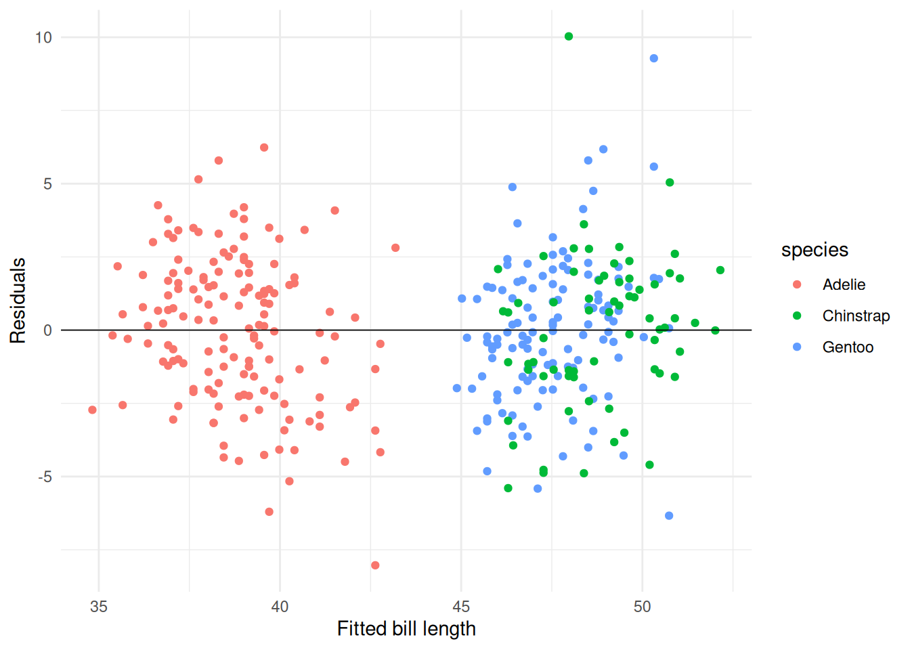

library(dplyr) # Data manipulation
library(ggplot2) # Visualisation
library(broom) # Model tidying
penguins |>
select(species, bill_len, bill_dep, flipper_len, body_mass, sex) |>
head()5 Linear models: a minimal example
Linear models describe how a numeric response changes with one or more predictors.
In this chapter you will:
- Fit a linear model with
lm() - Tidy coefficient estimates for interpretation
- Check model diagnostics and make predictions
Note
This section assumes:
- you have loaded
dplyr,ggplot2, andbroom - your response variable is numeric and roughly continuous
- you have inspected the data for missing values or obvious entry errors
We continue using the penguins dataset to predict bill length.
5.1 Fit a linear model
Use lm() with a formula of the form response ~ predictor1 + predictor2 to estimate how a numeric outcome changes with one or more predictors.
For example, we can model penguin bill length as a function of bill depth.
fit_simple <- lm(bill_len ~ bill_dep, data = penguins)
fit_simple
Call:
lm(formula = bill_len ~ bill_dep, data = penguins)
Coefficients:
(Intercept) bill_dep
55.0674 -0.6498 This output gives the intercept and slope estimates for the linear relationship between bill_len and bill_dep.
Extend the model to also include species as a categorical predictor. Replace the blanks with the appropriate code.
fit_species <- lm(bill_len ~ bill_dep + ____, data = ____)
fit_species
Tip
lm() automatically creates indicator variables for factors such as species.
Show solution
fit_species <- lm(bill_len ~ bill_dep + species, data = penguins)
fit_species
Call:
lm(formula = bill_len ~ bill_dep + species, data = penguins)
Coefficients:
(Intercept) bill_dep speciesChinstrap speciesGentoo
13.216 1.394 9.939 13.403 5.2 Include interaction terms
Interactions let the effect of one predictor change depending on another predictor’s value.
Fit a model with an interaction between bill depth and species.
fit_interaction <- lm(bill_len ~ bill_dep * species, data = penguins)
tidy(fit_interaction)Fit a model that allows the effect of bill depth to differ by sex. Replace the blanks.
fit_sex <- lm(bill_len ~ bill_dep * ____, data = ____)
tidy(fit_sex)Show solution
fit_sex <- lm(bill_len ~ bill_dep * sex, data = penguins)
tidy(fit_sex)5.3 Interpret coefficients
broom::tidy() converts model output into a tidy tibble that is easy to read and combine with other results.
Each coefficient represents the expected change in bill length for a one-unit change in that predictor, holding all others constant.
Obtain coefficient estimates with standard errors and p-values.
tidy(fit_species)Add 95% confidence intervals to the tidy output. Replace the blanks with the correct argument names.
tidy(fit_species, conf.int = ____, conf.level = ____)
Note
Confidence intervals show a range of plausible values for each coefficient.
Show solution
tidy(fit_species, conf.int = TRUE, conf.level = 0.95)5.4 Check diagnostics and predict
Use augment() for row-level diagnostics and glance() for overall model fit.
Residuals should scatter randomly around zero; systematic patterns may indicate model misspecification.
Predictions require a tibble of new values using the same variable names as in the model.
We first examine model diagnostics.
augmented <- augment(fit_species)
ggplot(augmented, aes(x = .fitted, y = .resid, colour = species)) +
geom_point() +
geom_hline(yintercept = 0, linewidth = 0.3) +
labs(x = "Fitted bill length", y = "Residuals") +
theme_minimal()
Summarise overall model fit.
glance(fit_species)We can also use predict() to generate fitted values for the training data or new data.
Here we predict bill length for the first three penguins in the dataset.
predict(fit_species, newdata = penguins |> head(3)) 1 2 3
39.28437 37.47216 38.30856 predict() returns a numeric vector of fitted values corresponding to the supplied rows.
Create predicted bill lengths for new penguins with specified bill depth and species. Replace the blanks with the correct column names or objects.
# tibble() creates a small data frame of new values
new_penguins <- tibble(
bill_dep = c(17, 19),
species = c("Adelie", "Gentoo")
)
predict(____, newdata = ____)
Warning
Always check that your new data use the same variable names and factor levels as the original training data.
Show solution
new_penguins <- tibble(
bill_dep = c(17, 19),
species = c("Adelie", "Gentoo")
)
predict(fit_species, newdata = new_penguins) 1 2
36.91455 53.10585 5.5 Summarise residual variation
Residual summaries quantify how well the model captures the observed data.
Compute the mean and standard deviation of residuals from fit_species.
augmented <- augment(fit_species)
augmented |>
summarise(
mean_resid = mean(.resid),
sd_resid = sd(.resid)
)Using the same augmented tibble, calculate the mean absolute residual. Fill in the blanks.
augmented |>
summarise(mean_abs_resid = mean(abs(___), na.rm = TRUE))Show solution
augmented |>
summarise(mean_abs_resid = mean(abs(.resid), na.rm = TRUE))5.6 Next steps
You now know how to:
- fit a linear model with
lm() - interpret coefficients using
broom::tidy() - check assumptions with
augment()andglance() - generate predictions with
predict()
Next, experiment with interaction terms (e.g., bill_dep * species) or try using another numeric response such as body_mass.